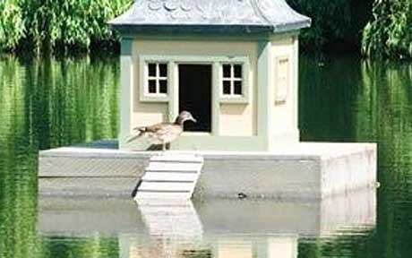

Thursday, May the 21st, 2009
back to: title, date or indexes
While I have fallen silent due to blockage of the inspirational funnels in my cranium—about which more later—the media has been merrily obsessed with MPs and their expenses. I have been following all the details with far more intensity than is advisable for a sensible person. Today, I wish simply to leap to the defence of the Tory Sir Peter Viggers, who claimed £1645 for a floating duck island. This seems to me to be a legitimate and imaginative use of taxpayers' money, quite unlike such abuses as moat-cleaning, mortgage interest, and food—except food for ducks, which is fine.
